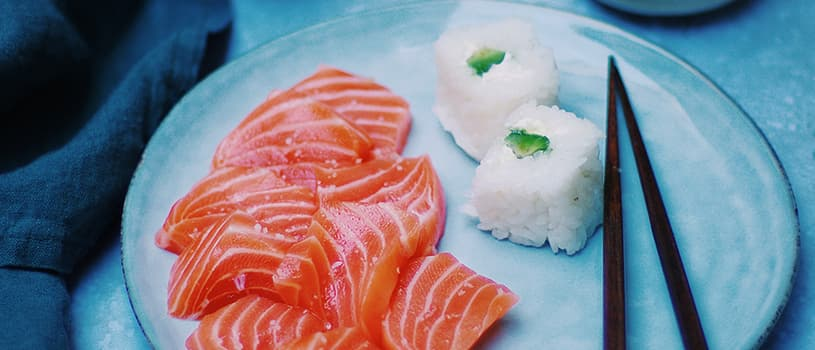

Cardápio
- SALMÃO SKIN
- un. pele de salmão grelhada e molho tarê
- SUSHI MISTO
- 10 unidades variadas de peixe
- SUSHI ESPECIAL
- 15 unidades variadas incluindo ovas
- TIRASHI
- eleção de peixes e ovas servidos sobre arroz
- HOT ROLL
- sushi empanado de salmão, cream cheese, kani e molho tarê
- EBITEN
- camarão empanado, alface e maionese
Tipos de Sushi
- SASHIMI MISTO
- 20 fatias variadas
- SASHIMI SALMÃO
- 20 fatias de salmão
- SASHIMI MAGURO
- 20 fatias de atum
- SASHIMI ESPECIAL
- 25 fatias incluindo polvo
- USSUZUKURI
- finas fatias de robalo ou salmão com tempero especial
Tipos de Sashimi


- YAKISSOBA
- Macarrão oriental com carne, frango e legumes
- SUKIYAKY DOMBURI
- Com carne, shimeji e legumes refogados
- LAMEN
- Deliciosa combinação de sopa e macarrão
- GYUDON
- Prato elaborado com carne bovina fatiada
Pratos Quentes
- CHÁ VERDE
- ÁGUA MINERAL
- REFRIGERANTE
- SUCO
- CERVEJA
- SAKÊ
- CAIPIRINHA
- WHISKY
Bebidas
- MISSOSHIRU
- sopa de soja
- GOHAN
- arroz branco
- SUNOMONO
- salada de pepino agridoce